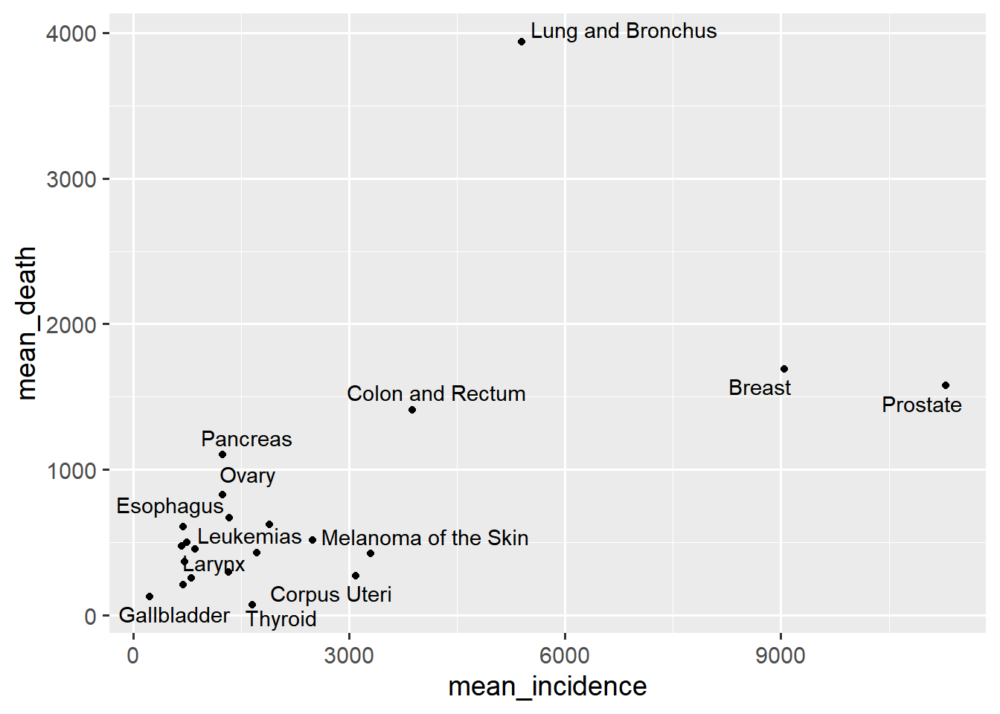

Chapter 5 Results
5.1 Variables that have relationship with cancer incidence counts.
Since the death count in this case is zero, we can replace these missing values by 0.
Since the incidence counts is a quantitative variable, we can transform this variable to several categorical groups such as “< 500”, “500 - 1000”, “1000 - 1500”, “1500 - 2000”, “>2000”.
## # A tibble: 6 x 13
## `Leading Cancer S~ `Leading Cancer ~ Year `Year Code` Sex `Sex Code` Race
## <chr> <chr> <dbl> <dbl> <chr> <chr> <chr>
## 1 Brain and Other N~ 31010-31040 1999 1999 Fema~ F Asian~
## 2 Brain and Other N~ 31010-31040 1999 1999 Fema~ F Black~
## 3 Brain and Other N~ 31010-31040 1999 1999 Fema~ F Black~
## 4 Brain and Other N~ 31010-31040 1999 1999 Fema~ F Black~
## 5 Brain and Other N~ 31010-31040 1999 1999 Fema~ F Black~
## 6 Brain and Other N~ 31010-31040 1999 1999 Fema~ F White
## # ... with 6 more variables: Race Code <chr>, Region <chr>, Region Code <chr>,
## # Mortality-Incidence Age-Adjusted Rate Ratio <dbl>, Death Counts <dbl>,
## # Incidence Counts <chr>Mosaic plot gives an overview of the data and makes it possible to recognize relationships between different variables[https://en.wikipedia.org/wiki/Mosaic_plot#:~:text=It%20gives%20an%20overview%20of,on%20by%20Friendly%20in%201994.] . Hence we can use mosaic plot to determine the variables that have strong relationship with cancer incidence counts.
Although we cannot recognize each leading cancer site, the distribution of incidence counts varies slightly among leading cancer sites. Hence we can say the leading cancer site has effect on incidence counts.
We can see that there is not obvious difference between female and male, so Sex does not have significant relationship with incidence counts.

There is a noticeable trend that the distribution of incidence counts varies quite significantly. Thus, race has strong effect on incidence counts. White people have a greatest risk of cancer, and American indian people have a greatest risk of cancer.
The distribution of incidence counts varies slightly among regions. Hence we can say the regions has weak effect on incidence counts.
To summarize, race seems to have the strongest association with Incidence counts.
5.2 The relationship between gender and breast cancer.
We aim to find a type of cancer that has largest incidence counts.
## # A tibble: 22 x 2
## `Leading Cancer Sites` Freq
## <chr> <dbl>
## 1 Breast 4432442
## 2 Lung and Bronchus 4237328
## 3 Prostate 4178907
## 4 Colon and Rectum 2928387
## 5 Urinary Bladder 1366819
## 6 Melanoma of the Skin 1287768
## 7 Non-Hodgkin Lymphoma 1265074
## 8 Kidney and Renal Pelvis 1025166
## 9 Leukemias 891625
## 10 Corpus Uteri 872060
## # ... with 12 more rowsFrom the above table we can see that breast cancer has the largest incidence counts. And from a research, men had higher death rates than women across all stages of breast cancer, even after the researchers adjusted for differences in patients’ clinical characteristics, such as the type and stage of disease, treatments received, age, race/ethnicity, and access to care. [https://www.cancer.gov/news-events/cancer-currents-blog/2019/male-breast-cancer-higher-mortality#:~:text=In%20the%20study%2C%20men%20had,ethnicity%2C%20and%20access%20to%20care.] We want to verify this statement.
Firstly, we use boxplot to see the distribution of Mortality-Incidence Age-Adjusted Rate Ratio by gender for breast cancer.

From the boxplot, male has higher death rates than female. And there are 4 outliers for male.
Boxplots allow us to see the outliers and medians while ridgeline plots allow us to easily compare distributions of the death rate ratio.
From the above ridgeline plot, we can easily find that the mode of male is around 0.225, and the mode of female is 0 and 0.15. And the distribution of rate ratio of male is unimodal while the distribution of female is bimodal.
5.3 The change of death rate with the increasing year of diagnosis of top 12 Leading Cancer Sites.
Firstly, we determine the 12 Leading Cancer Sites with the highest death rate.
## [1] "Esophagus" "Pancreas"
## [3] "Liver" "Lung and Bronchus"
## [5] "Gallbladder" "Brain and Other Nervous System"
## [7] "Ovary" "Stomach"
## [9] "Myeloma" "Leukemias"
## [11] "Larynx" "Colon and Rectum"
From the scatter plot, we find that although Prostate and Breast cancers have high incidence counts mean, the death counts are relatively low. But for Lung and Bronchus, Colon and Rectum cancers have high incidence counts and high death counts.
By the above cleveland dot plot, Esophagus cancer has the highest mean mortality ratio.
We transform year and death rate to several categorical groups. For year, we use “1999-2002”, “2002-2006”, “2006-2010”, “2010-2014”, “2014-2018”, and for death rate, we break them to “Low”, “Medium” and “High”.
## # A tibble: 6 x 3
## # Groups: Leading Cancer Sites [2]
## `Leading Cancer Sites` Year rate
## <chr> <chr> <chr>
## 1 Brain and Other Nervous System 1999-2002 Medium
## 2 Brain and Other Nervous System 2002-2006 Medium
## 3 Brain and Other Nervous System 2006-2010 Medium
## 4 Brain and Other Nervous System 2010-2014 Medium
## 5 Brain and Other Nervous System 2014-2018 Medium
## 6 Colon and Rectum 1999-2002 LowThe alluvial diagram shows the movement of different Leading Cancer Sites and how they rank in terms of death rate over time. For example, we can see Myeloma went from the high rate in 1999-2002, then moved down to medium in 2002-2010, and moved down to low in 2010-2018.
The heat map allows us to easily examine how one leading cancer site changes over time For example, Stomach cancer starts off as medium death rate, moves to low death rate.